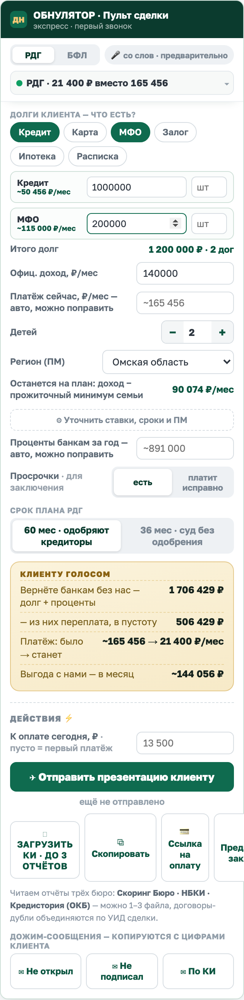
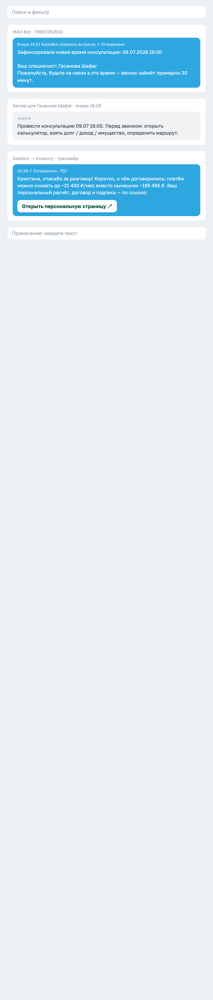
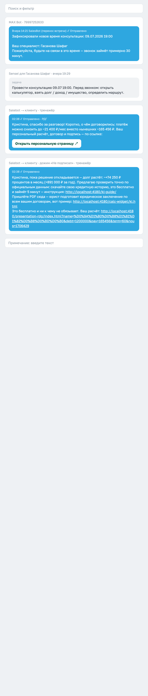
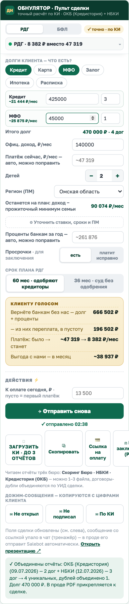

Считает маршрут клиента по закону, отправляет персональную презентацию и фиксирует исход звонка, не выходя из карточки сделки.
Шесть вопросов, которые раньше решались калькулятором, памятью и «вроде отправлял» — теперь решает пульт.
Вводишь долги со слов — пульт считает маршрут по 127-ФЗ: РДГ (платёж плана, вилка 60/36 месяцев, ипотека вне плана) или списание (что спишется и выгода). Вердикт обновляется на каждой цифре.
Цена-канон вшита: 13 500 ₽/мес · 189 000 · VIP 169 000 · госплатежи 50 000 отдельно. Самодеятельность с цифрами исключена — все страницы считают из одного ядра.
Клиент получает короткую ссылку, каждое открытие видно. Открыл — сделка «горячая», менеджер перезванивает в момент интереса, а не наугад.
Запрос кредитной истории как обмен: «пришлёте отчёт — юрист бесплатно сделает заключение». Черновик со слов показывает выводы с пропусками, и пропуски продают запрос сами.
Пульт читает PDF трёх бюро за секунды: долги раскладываются по типам, заключение становится точным, и та же ссылка клиента начинает показывать его реальных кредиторов.
Одна вечная ссылка проходит весь путь: со слов → по КИ → подписал → оплатил. Договор, подпись по СМС и оплата по СБП — последние экраны той же презентации.
Пять шагов от «алло» до денег. Каждая кнопка ниже — живой прототип, открывается в новой вкладке.
Менеджер отмечает типы долгов, суммы, доход, детей и регион. Пульт показывает маршрут, платёж плана и блок «Клиенту голосом» — три опорные цифры для разговора.

Одна кнопка: расчёт сохранён, цифры записаны в поля сделки, клиенту в чат ушла персональная презентация. Менеджер ведёт по ней голосом — страница сама не продаёт, продаёт звонок.

Каждый недожатый звонок заканчивается ступенью: оплата, частичка от 1 000 ₽, подпись с датой или запрос кредитной истории. Дожим-сообщения с цифрами клиента пульт собирает сам, менеджеру остаётся отправить.

Пульт читает отчёты (Скоринг Бюро · НБКИ · Кредистория), долги становятся точными, юрзаключение — боевым. Та же ссылка клиента теперь показывает его реальных кредиторов и точную выгоду.

Финал на той же странице: клиент проходит договор, подписывает кодом из СМС и платит по СБП. После подписи ссылка сама превращается в экран «договор подписан — остался платёж», после оплаты — в «Готово, вы в работе».
Открываются как есть, с демо-данными. Параметры ?ki=1 и ?signed=1 имитируют состояния — в боевой версии их ставит сервер.
Прототип готов целиком и является эталоном боевой версии: вёрстка, формулы, состояния и тексты переносятся один в один.
ТЗ фазы 1 для разработки готово: виджет в amoCRM, движок (короткие ссылки, трекинг открытий, поля сделки, Salebot, вебхуки подписи и оплаты), КИ-контур с шифрованием. Демо-параметры из ссылок выше в проде заменяет состояние с сервера: у клиента одна вечная ссылка без параметров.